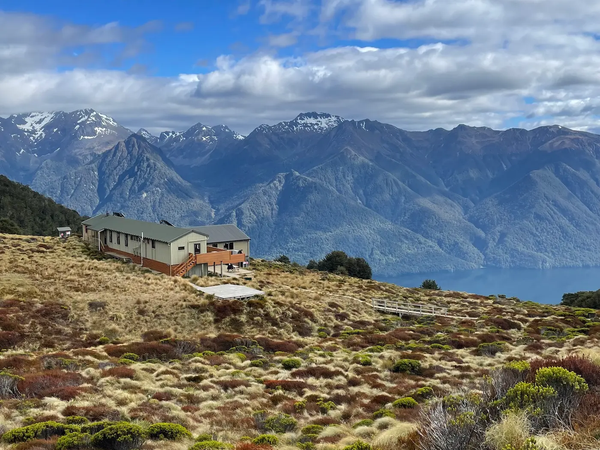
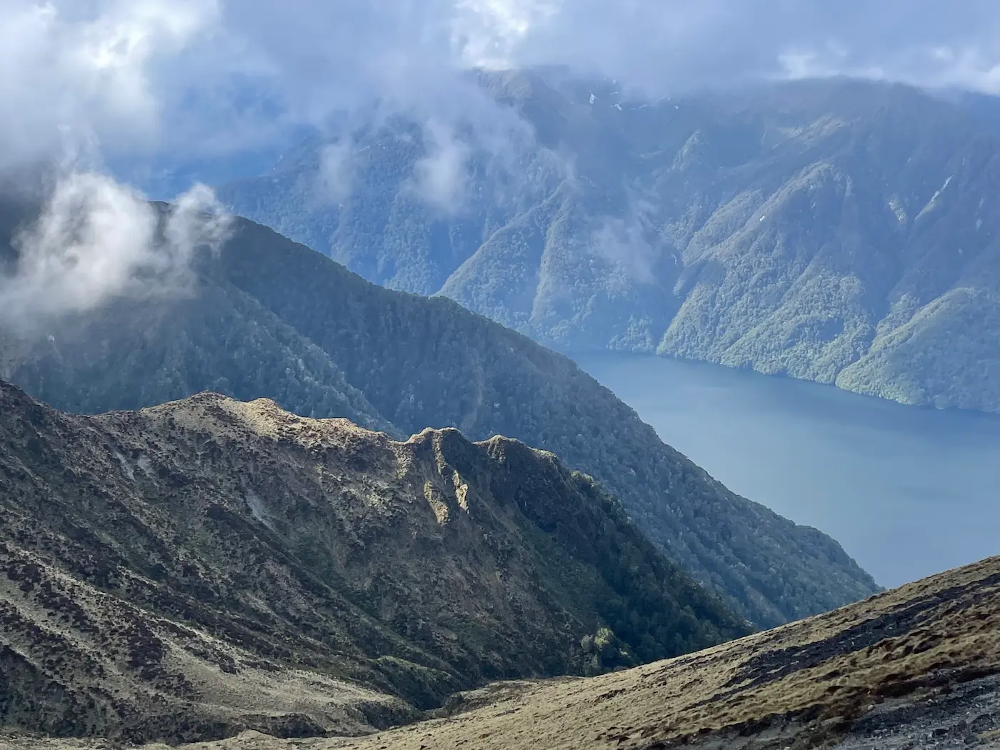
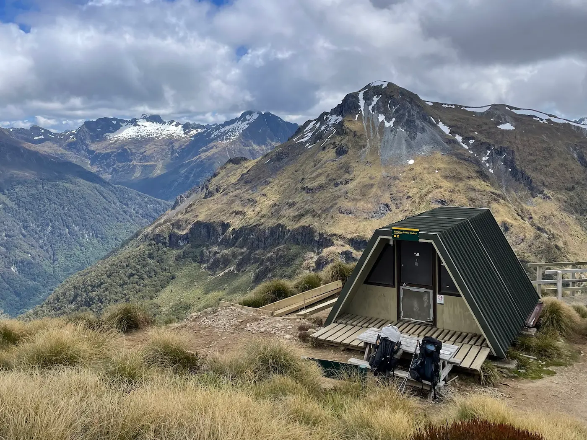
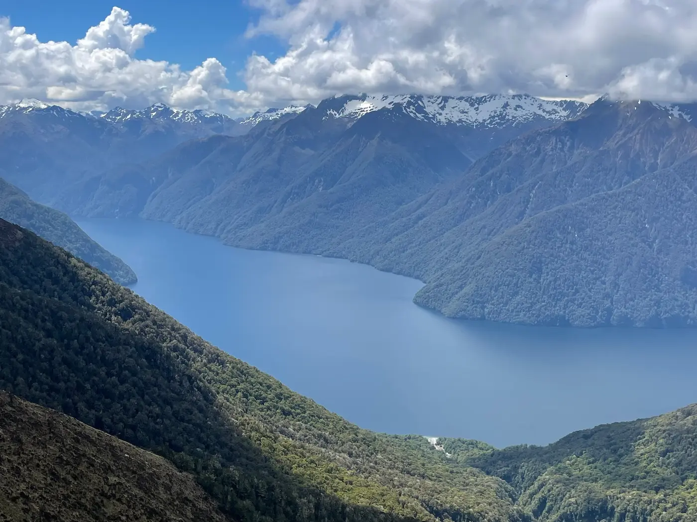

Kepler Track, Fiordland National Park

The Kepler Track is one of New Zealand's Great Walks, but it's more accessible and flexible than something like the Milford Track. It's a 60 km loop starting near Te Anau, so logistics are simple — no expensive transfers to arrange.
I walked it over 3 days at a steady pace. The alpine ridge between Luxmore Hut and Iris Burn is the section that stands out — long stretches above the treeline with views across Fiordland. Weather changes fast and the ridge is fully exposed, but the track itself is well marked and technically easy.
Step up from day hikes here if you're comfortable with alpine terrain in changeable weather. Solid huts, clear trails, and enough sustained climbing to feel like a proper trip.
| Day | Route | Distance | Elevation | Time | Stay |
|---|---|---|---|---|---|
| 1 | Control Gates → Luxmore Hut | 13.8 km | ↑1,000 m | 5–6 hrs | Luxmore Hut |
| 2 | Luxmore Hut → Iris Burn Hut | 16.2 km | ↑200 ↓1,000 m | 6–7 hrs | Iris Burn Hut |
| 3 | Iris Burn Hut → Moturau Hut | 14.6 km | ↑300 ↓300 m | 5–6 hrs | Moturau Hut |
| 4 | Moturau Hut → Rainbow Reach / Control Gates | 9.5–15 km | flat | 3–5 hrs | — |
3-day alternative: skip Moturau Hut and combine Day 3 + 4 — a long ~24 km final day.

- Walk anti-clockwise — Control Gates → Luxmore first. Gets the long climb done early and puts the alpine ridge on Day 2 when you're fresh.
- The hardest section is Day 1: a sustained 1,000 m climb to Luxmore Hut. No technical difficulty, just steady uphill for 5–6 hours.
- The best section is Luxmore Hut → Iris Burn — exposed alpine ridge with long views across Fiordland.
- The ridge is fully exposed. Strong wind, rain, or low cloud can make it slow and cold. Check the forecast before committing.
- Track conditions are good overall. Expect muddy sections after rain, especially the descent to Iris Burn.
- Three huts: Luxmore (large, busy, best views), Iris Burn (quieter, near a waterfall), Moturau (lakeside, more relaxed).
- Tent sites are available at each hut — cheaper, but you carry the gear.
- Kea will go after loose gear at Luxmore. Keep packs zipped and don't leave anything outside the hut.
- Book huts early through the Department of Conservation in Great Walk season (Nov–Apr). Spots go fast for Dec–Feb.
- No phone signal across most of the track. Tell someone your plan before you start.
- Weather changes quickly. Don't push the ridge in bad conditions — wait it out at Luxmore if you have to.
- Track is well marked. No navigation needed in normal conditions.
- Outside Great Walk season, conditions are alpine — snow and ice are possible. Different trip entirely.
- Rainbow Reach is an early exit point on Day 4 if you need to bail on the final flat section.

- Bus from Queenstown to Te Anau — $35–$60 NZD, ~2.5 hours.
- Te Anau to the Kepler trailhead (Control Gates) — 5–10 min by car, or $15–$25 NZD by shuttle.
- Te Anau is small and walkable — everything central is within 10–15 minutes on foot.
- Shuttles to/from the Kepler start and end points — $15–$25 NZD per leg, organised through your accommodation or the i-Site.
- Hitchhiking is common between Te Anau and the trailheads. Generally safe in Great Walk season.
- Te Anau budget hotels — $70–$120 NZD/night for basic private rooms. Book ahead in Dec–Jan.
- Te Anau motels — $120–$180 NZD/night, more comfort, parking, kitchenettes.
- DOC huts on the track — $40–$80 NZD/night, booked through the Department of Conservation. Tent sites at hut locations are cheaper but you carry the gear.

- Stock up at the Te Anau supermarket before the hike — $20–$30 NZD/day for trail food covers it comfortably.
- Nothing is sold on the track. Bring everything for 3–4 days.
- Post-hike pub meals in town — $20–$35 NZD per meal.
- Hut water is rainwater-collected and untreated. Boil or filter if you're cautious.
| Item | NZD |
|---|---|
| DOC hut (Great Walk season) | $40 – $80 |
| Trail food (per day) | $20 – $30 |
| Shuttle / transport | $15 – $25 |
| Activities and side trips | $0 – $20 |
| Daily total | $90 – $150 |
- Waterproof jacket — Fiordland is wet. Non-negotiable, even in summer.
- Warm layers for the alpine ridge — wind exposure between Luxmore and Iris Burn drops the felt temperature fast.
- 2–3 L water capacity — refill at huts.
- Hiking shoes with grip — muddy descents in places.
- Headlamp — hut lighting is minimal, sunset is early outside midsummer.
- 3–4 days of food, plus a buffer day in case of weather delay.
- Basic first aid and blister care.